종자기사 (2018-08-19 기출문제)
1과목: 종자생산학
1. 저장종자가 발아력을 잃게 되는 원인으로 옳지 않은 것은?
- 종자 단백질의 변성
- 효소의 활성 증진
- 호흡에 의한 종자 저장물질 소모
- 저장 기간 중 저장고 온도와 습도의 상승
(정답률: 83%)

2. 웅성불임성에 대한 설명으로 틀린 것은?
- 웅성불임성은 유전자적 웅성불임성, 세포질적 웅성불임성, 세포질ㆍ유전자적 웅성불임성으로 구분한다.
- 임성회복유전자에는 배우체형과 포자체형이 있다.
- 세포질적 웅성불임성은 불임요인이 세포질에 있기 때문에 자방친이 불임이면 화분친의 유전자 구성에 관계없이 불임이다.
- 대체로 세포질적 웅성불임성이 유전자적 웅성불임성보다 잘 생긴다.
(정답률: 62%)
3. 다음 중 종자의 수명에서 장명종자에 해당하는 것은?
- 클로버
- 강낭콩
- 해바라기
- 베고니아
(정답률: 63%)
4. 벼 돌연변이 육종에서 종자에 돌연변이 물질을 처리하였을 때 이 처리 당대를 무엇이라 하는가?
- P0
- M1
- Q2
- G3
(정답률: 87%)
5. 다음 채소 중 자가수정율이 가장 높은 것은?
- 토마토
- 오이
- 호박
- 배추
(정답률: 67%)
6. 일대잡종 종자 채종 시 생력화 수단으로 활용되는 채종체계가 아닌 것은?
- 자가불화합성 이용
- 웅성불임 현상 이용
- 화학적 제웅법
- 잡종강세 현상 이용
(정답률: 54%)
7. 종자의 발달에 대한 설명으로 틀린 것은?
- 수정 후 세포분열과 신장을 위한 양분과 수분의 흡수로 종자는 무거워진다.
- 수정 직후의 건물종은 과피가 가장 무겁다.
- 배유 발달의 초기에 높은 수준에 있던 당함량은 전분 함량이 증가함에 따라 급속히 감소한다.
- DNA와 RNA는 배유의 초기발생과정 중 세포가 분열할 때에는 감소한다.
(정답률: 74%)
8. 직접 발아시험을 하지 않고 배의 환원력으로 종자 발아력을 검사하는 방법은?
- X선 검사법
- 전기전도도 검사법
- 테트라졸리움 검사법
- 수분함량 측정법
(정답률: 83%)
9. 타식성 작물의 채종포에 있어서 포장검사 시 반드시 조사해야 할 사항은?
- 총 건물생산량
- 종실의 지방 함량
- 타 품종과의 격리거리
- 개화기와 성숙기
(정답률: 81%)
10. 종자생산에서 수확 적기의 판단 기준으로 옳은 것은?
- 식물체 외양과 종자의 수분 함량에 따라 결정한다.
- 초기에 개화 성숙한 종자 상태에 따라 결정한다.
- 생리적 성숙기에 도달한 때가 수확 적기이다.
- 개화기에 따라 종자활력을 검정하여 성숙한 종자 상태에 따라 결정한다.
(정답률: 59%)
11. 채종재배 시 채종포로서 적당하지 못한 곳은?
- 등숙기에 강우량이 많고 습도가 높은 지역
- 토양이 비옥하고 배수가 양호하며 보수력이 좋은 토양
- 겨울 기온이 온화하고 등숙기에 기온의 교차가 큰 곳
- 교잡을 방지하기 위하여 다른 품종과 격리된 지역
(정답률: 91%)
12. 종자의 수분평형곡선에 대한 설명으로 옳지 않은 것은?
- 어떤 일정한 상대습도 하에서 온도가 상승하면 수분함량이 상대적으로 적어진다.
- 방습(防濕) 시의 평형곡선은 흡습 시의 평형곡선보다 약간 높다.
- 지방의 함량이 많은 종자는 단백질이나 전분의 함량이 많은 종자보다 수분평형곡선이 높다.
- 옥수수와 같은 화곡류의 종자는 동일한 상대습도 하에서 유료작물보다 수분함량이 높아 질 수 있다.
(정답률: 61%)
13. 품종의 유전적 순도를 높일 수 있는 방법으로 거리가 먼 것은?
- 인공수분
- 격리재배
- 개화 전의 이형주 제거
- 염수선에 의한 종자의 정선
(정답률: 66%)
14. 무의 채종재배를 위한 포장의 격리거리는 얼마인가?
- 100m 이상
- 250m 이상
- 500m 이상
- 1000m 이상
(정답률: 73%)
15. 종자의 온탕처리로 방제되는 병해가 아닌 것은?
- 벼의 선충심고병
- 맥류의 깜부기병
- 고구마의 검은무늬병
- 배나무의 붉은별무늬병
(정답률: 61%)
16. 발아검사 시 재시험을 하여야 하는 경우가 아닌 것은?
- 경실종자가 많아 휴면으로 여겨질 때
- 독물질이나 진균, 세균의 번식으로 시험결과에 신빙성이 없을때
- 발아율이 낮을 때
- 반복간의 차이가 규정된 최대 허용오차 범위를 초과할 때
(정답률: 79%)
17. 양파의 채종과 관련된 특성으로 틀린 것은?
- 녹식물 저온 감응성 식물
- 화분생명이 수분에 극히 약함
- 모구(母球) 이용 채종
- 영양번식이 거의 안 됨
(정답률: 70%)
18. 봉지 씌우기를 필요로 하지 않는 경우는?
- 교배 육종
- 원원종 채종
- 여교배 육종
- 자가불화합성을 이용한 F1채종
(정답률: 80%)
19. 다음 작물 중 뇌수분의 실용성이 가장 높은 것은?
- 호박
- 가지
- 토마토
- 오이
(정답률: 38%)
20. 다음 중 과실이 바로 종자로 취급되고 있는 작물로만 나열된 것은?
- 오이, 고추
- 고추, 옥수수
- 옥수수, 벼
- 벼, 오이
(정답률: 77%)
2과목: 식물육종학
21. 두 품종이 가지고 있는 우량한 특성을 1개체 속에 새로이 조합시키기 위하여 적용할 수 있는 가장 효율적인 육종법은?
- 교잡육종법
- 돌연변이 육종법
- 분리육종법
- 배수성육종법
(정답률: 81%)
22. 자연교잡에 의한 배추과(십자화과) 채소품종의 퇴화를 막기 위하여 채종재배 시 사용할 수 있는 방법으로 가장 적당한 것으로만 나열된 것은?
- 망실재배, 수경재배
- 지베렐린 처리, 외딴섬재배
- 외딴섬재배, 망실재배
- 수경재배, 지베렐린 처리
(정답률: 76%)
23. 동질배수체를 육종에 이용할 때 가장 불리한 점은?
- 임성
- 내병성
- 생육상태
- 종자의 크기
(정답률: 72%)
24. 웅성불임성을 이용하여 F1종자 채종을 하는 작물로만 나열한 것은?
- 시금치, 호박, 완두
- 배추, 상추, 오이
- 양파, 고추, 당근
- 토마토, 강낭콩, 참외
(정답률: 66%)
25. 벼와 같은 자식성 식물에서의 잡종강세에 대한 설명으로 옳은 것은?
- 자식성 식물이므로 잡종 강세가 일어나지 않는다.
- 교배조합에 따라 잡종강세가 일어날 수 있다.
- 모든 교배조합에서 잡종강세가 크게 나타난다.
- 자식성 식물에서는 잡종강세글 조사하지 않는다.
(정답률: 80%)
26. 우리나라 봄에 배추와 무를 재배할 수 있게 된 가장 주요한 육종형질은 무엇인가?
- F1의 잡종강세
- 만추대성
- 내병성
- 다수성
(정답률: 71%)
27. 다음 주 타식성 작물의 특성으로만 나열된 것은?
- 완전화(完全花), 이형예현상
- 이형예현상, 자웅이주
- 자웅이주, 폐화수분
- 폐화수분, 완전화(完全花)
(정답률: 79%)
28. 육종단계에서 분자표지의 활용도가 매우 낮은 것은?
- 여교배육종 시 세대 단축
- 종자순도 검정
- 생산성 검정
- 유전자원 및 품종의 분류
(정답률: 51%)
29. 염색체 배가에 가장 효과적인 방법은?
- 콜히친 처리
- NAA 처리
- 저온 처리
- 고온 처리
(정답률: 90%)
30. 대부분의 형질이 우량한 장려품종에 내병성을 도입하고자 할 때 가장 효과적인 육종법은?
- 분리육종법
- 계통육종법
- 집단육종법
- 여교잡육종법
(정답률: 83%)
31. 다음 중 타가수정 작물에 적용되기도 하나 자가수정 작물의 품종특성유지에 특히 잘 적용 되는 육종법은?
- 계통분리법
- 순계도태법
- 영양계분리법
- 순계분리법
(정답률: 52%)
32. 유전적으로 이형접합인 F1 품종의 균등성과 영속성을 유지하기 위한 방법으로 가장 적당한 것은?
- 양친 품종의 균등성과 영속성을 유지시킴
- F2서 F1과 똑같은 특성을 가진 개체를 선발함
- 방사선 조사에 의하여 돌연변이를 유발함
- 염색체를 배가 시킴
(정답률: 68%)
33. 잡종강세를 이용한 F1품종들의 장점으로 가장 거리가 먼 것은?
- 증수효과가 크다.
- 품질이 균일하다.
- 내병충성이 양친보다 강하다.
- 종자의 대량 생산이 용이하다.
(정답률: 63%)
34. 생산력 검정에 관한 설명 중 틀린 것은?
- 검정포장은 토양의 균일성을 유지하도록 노력한다.
- 계측, 계량을 잘못하면 포장시험에 따르는 오차가 커진다.
- 시험구의 크기가 클수록 시험구당 수량 변동이 커진다.
- 시험구의 반복회수의 증가로 오차를 줄일 수 있다.
(정답률: 78%)
35. 우수형질을 가진 아조변이가 나타났을 때 신품종으로만 이용할 수 있는 것으로 나열된 것은?
- 양파, 파
- 배추, 무
- 토마토, 가지
- 사과, 감귤
(정답률: 61%)
36. 1염색체식물(monosomics)을 옳게 나타낸 것은?
- 2n+1
- 2n-1
- n
- 2n+2
(정답률: 80%)
37. 자연일장이 13시간 이하로 되는 늦여름 야간 자정부터 1시까지 1시간 동안 충분한 광선을 식물체에 일정 기간 동안 조명해 주었을 때 나타나는 현상은?
- 코스모스 같은 단일성 식물의 개화가 현저히 촉진되었다.
- 가을 배추가 꽃을 피웠다.
- 가을 국화의 꽃봉오리가 제대로 생기지 않았다.
- 조생종 벼가 늦게 여물었다.
(정답률: 74%)
38. 온대지방이 원산인 단일성 작물(벼, 콩 등)을 열대지방에 재배했을 때, 온대지방에 재배했을 때의 개화기와 비교하여 옳게 설명한 것은?(오류 신고가 접수된 문제입니다. 반드시 정답과 해설을 확인하시기 바랍니다.)
- 일반적으로 고도와는 관계없이 일찍 개화한다.
- 일반적으로 고도와는 관계없이 늦게 개화한다.
- 열대 지방의 저지애에서는 일찍 개화하고 고지대에서는 늦게 개화한다.
- 일반적인 경향이 없다.
(정답률: 44%)
39. 작물 육종에서 순계분리법이 가장 효과적인 경우는?
- 자식성인 수집 재래종의 개량
- 타가수정으로 근교약세인 수집 재래종의 개량
- 타가수정의 영양번식 작물 개량
- 인공교배에 의한 품종 개량
(정답률: 70%)
40. 다음 중 트리티케일(Triticale)의 기원은?
- 밀 × 호밀
- 밀 × 보리
- 호밀 × 보리
- 보리 × 귀리
(정답률: 78%)
3과목: 재배원론
41. 다음 중 감온형에 해당하는 것은?
- 그루콩
- 그루조
- 가을메밀
- 올콩
(정답률: 75%)
42. 다음 중 C3식물에 해당하는 것으로만 나열된 것은?
- 옥수수, 수수
- 기장, 사탕수수
- 명아주, 진주조
- 보리, 밀
(정답률: 73%)
43. 벼와 같이 식물체가 포기를 형성하는 작물을 무엇이라 하는가?
- 포복형작물
- 주형작물
- 내냉성작물
- 내습성작물
(정답률: 74%)
44. 다음 중 작물의 내염성 정도가 가장 강한 것은?
- 가지
- 사과
- 감자
- 양배추
(정답률: 72%)
45. 다음 중 작물의 적산온도가 가장 낮은 것은?
- 벼
- 메밀
- 담배
- 조
(정답률: 76%)
46. 다음 중 ( )에 알맞은 내용은?
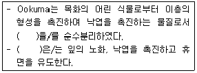
- 에틸렌
- 지베렐린
- ABA
- 시토키닌
(정답률: 69%)
47. ( )에 알맞은 내용은?
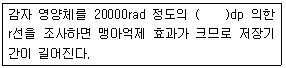
- 15C
- 60CO
- 17C
- 40K
(정답률: 60%)
48. 다음 중 작물의 기원지가 중국지역에 해당하는 것으로만 나열된 것은?
- 감자, 땅콩, 담배
- 조, 피, 메밀
- 토마토, 고추, 수수
- 수박, 참외, 호밀
(정답률: 76%)
49. 다음 중 굴광현상이 가장 유효한 것은?
- 440~480mm
- 490~520mm
- 560~630mm
- 650~690mm
(정답률: 64%)
50. 다음 중 작물의 주요온도에서 최저온도가 가장 낮은 것은?
- 귀리
- 옥수수
- 호밀
- 담배
(정답률: 58%)
51. 다음 중 열해에 대한 설명으로 가장 적절하지 않은 것은?
- 암모니아의 축적이 많아진다.
- 출분이 침전된다.
- 유기물의 소모가 적어져 당분이 증가한다.
- 증산이 과다해진다.
(정답률: 78%)
52. 다음에서 설명하는 것은?
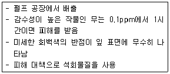
- 아황산가스
- 불화수소가스
- 염소계가스
- 오존가스
(정답률: 49%)
53. 다음 중 천연 식물생장조절제의 종류가 아닌 것은?
- 제아틴
- 에세폰
- IPA
- IAA
(정답률: 54%)
54. 대기의 조성에서 질소 가스는 약 몇 %인가?
- 21
- 79
- 0.03
- 50
(정답률: 74%)
55. 벼의 침수피해에 대한 내용이다. ( )에 알맞은 내용은?
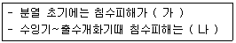
- 가 : 작다, 나 : 작아진다.
- 가 : 작다, 나 : 커진다.
- 가 : 크다, 나 : 커진다.
- 가 : 크다, 나 : 작아진다.
(정답률: 78%)
56. 다음 중 단일식물에 해당하는 것으로만 나열된 것은?
- 샐비어, 콩
- 양귀비, 시금치
- 양파, 상추
- 아마, 감자
(정답률: 56%)
57. 다음 중 자연교잡률이 가장 낮은 것은?
- 아마
- 밀
- 보리
- 수수
(정답률: 38%)
58. 다음 중 노후답의 재배대책으로 가장 거리가 먼 것은?
- 조식재배를 한다.
- 저항성 품종을 선택한다.
- 무황산근 비료를 시용한다.
- 덧거름 중점의 시비를 한다.
(정답률: 42%)
59. 수박 접목의 특성에 대한 설명으로 가장 거리가 먼 것은?
- 흡비력이 강해진다.
- 과습에 잘 견딘다.
- 품질이 우수해진다.
- 흰가루병에 강해진다.
(정답률: 60%)
60. 다음 중 상대습도가 70%일 때 쌀의 안전저장 온도 조건으로 가장 적절한 것은?
- 5℃
- 10℃
- 15℃
- 20℃
(정답률: 55%)
4과목: 식물보호학
61. 대부분의 나비목에 해당하는 것은 부속지가 몸에 붙어 있는 번데기의 형태는?
- 위용
- 피용
- 저작형 나용
- 비저작형 나용
(정답률: 73%)
62. 제초제에 대한 설명으로 옳은 것은?
- 디캄바는 접촉형으로 비선택성이다.
- 글루포시네이드암모늄은 광엽 잡초에 대하여 선택성이 있다.
- 플루아지호프피부틸은 화본과 잡초에 대하여 선택성이 있다.
- 글리포세이트는 이행형으로 콩과 잡초에 대하여 선택성이 있다.
(정답률: 47%)
63. 주로 과실을 가해하는 해충이 아닌 것은?
- 복숭아순나방
- 복숭아명나방
- 복숭아심식나방
- 복숭아유리나방
(정답률: 68%)
64. 무성포자에 해당하는 것은?
- 자낭포자
- 분생포자
- 담자포자
- 접합포자
(정답률: 53%)
65. 항생제 계통의 살균제에 해당하는 것은?
- 만코제브 수화제
- 카벤다짐 수화제
- 데부코나졸 유제
- 스트렙토마이신 수화제
(정답률: 59%)
66. 감자의 싹에 나타난 병징으로 바이러스 감염여부를 판정하는 것은?
- 황산구리법
- 형광항체법
- 슬라이드법
- 괴경지표법
(정답률: 84%)
67. 알 → 약충 → 성충으로 변화하는 곤충 중에 약충과 성충의 모양이 완전히 다르고, 주로 잠자리목과 하루살이목에서 볼 수 있는 변태의 형태는?
- 반변태
- 과변태
- 무변태
- 완전변태
(정답률: 56%)
68. A 유제(50%)를 2000배로 희석하여 10a당 160L를 살포할 때 A 유제의 소요량(mL)은?
- 40
- 60
- 80
- 100
(정답률: 76%)
69. 월년생 잡초에 해당하는 것은?
- 명아주
- 속속이풀
- 밭뚝외풀
- 바람하늘지기
(정답률: 47%)
70. 농약의 살포 방법 중 미스트법에 대한 설명으로 옳지 않은 것은?
- 살포 시간 및 인력 비용 등을 절감한다.
- 살포액의 농도를 낮게 하고 많은 양을 살포한다.
- 살포액의 미립화로 목표물에 균일하게 부착시킨다.
- 분사 형식은 노즐에 압축공기를 같이 주입하는 유기분사 방식이다.
(정답률: 71%)
71. 벼 잎벌레에 대한 설명으로 옳은 것은?
- 식엽성 해충이다.
- 유충만 가해한다.
- 번데기로 월동한다.
- 1년에 3회 발생한다.
(정답률: 71%)
72. 다년생 잡초에 해당하는 것은?
- 쇠뜨기
- 환삼덩굴
- 중대가리풀
- 가을강아지풀
(정답률: 63%)
73. 잡초로 인해 예상되는 피해 또는 손실이 아닌 것은?
- 작물의 품질 저하
- 작물의 수확량 감소
- 해충의 서식처 제공
- 토양의 물리성 악화
(정답률: 75%)
74. 비기생성 선충과 비교할 때 기생성 선충만 가지고 있는 것은?
- 근육
- 신경
- 구침
- 소화기관
(정답률: 81%)
75. 잡초의 밀도가 증가하면 작물의 수량이 감소되는데, 어느 밀도 이상으로 잡초가 존재하면 작물 수량이 현저하게 감소되는 수준까지의 밀도는?
- 잡초밀도
- 잡초경제한계밀도
- 잡초허용한계밀도
- 작물수량감소밀도
(정답률: 77%)
76. 병해충 발생 예찰을 위한 조사방법 중 정점조사의 목적으로 옳지 않은 것은?
- 방제 범위 결정
- 방제 적기 결정
- 방제 여부 결정
- 연차간 발생장소 비교
(정답률: 49%)
77. 훈증제는 주로 해충의 어느 부분을 통하여 체내에 들어가서 해충을 죽게 하는가?
- 입
- 피부
- 날개
- 기문
(정답률: 74%)
78. 벼에 사과 탄저병균을 접종하여도 같은 병에 걸리지 않는다. 벼의 이와 같은 성질을 나타내는 용어는?
- 면역성
- 내병성
- 확대저항성
- 감염저항성
(정답률: 55%)
79. 밀 줄기녹병균의 제1차 전염원이 되는 포자는?
- 소생자
- 겨울포자
- 여름포자
- 녹병정자
(정답률: 70%)
80. 시설원예의 대표적인 해충으로 성충의 몸이 전체 흰색을 나타내며, 침 모양의 주중이를 이용하여 기주를 흡즙하여 가해하는 해충은?
- 무잎벌
- 온실가루이
- 고자리파리
- 복숭아혹진딧물
(정답률: 72%)
5과목: 종자관련법규
81. 식물신품종 보호법에 대한 내용이다. ( 가 )에 알맞은 내용은?
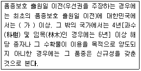
- 3개월
- 6개월
- 1년
- 2년
(정답률: 63%)
82. 식물신품종 보호법상 심판에 대한 내용이다. ( )에 알맞은 내용은?
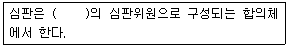
- 3명
- 5명
- 7명
- 9명
(정답률: 68%)
83. 수입적응성시험의 심사기준에서 재배시험지역에 대한 내용이다. ( )에 알맞은 내용은? (단, 시설 내 재배시험인 경우는 제외한다.)
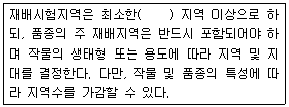
- 4개
- 3개
- 2개
- 1개
(정답률: 61%)
84. 수입적응성시험의 대상작물 및 실시기관에 대한 내용이다. 국립산림품종관리센터에서 실시하는 대상작물에 해당하는 것은?
- 당귀
- 표고
- 작약
- 황기
(정답률: 58%)
85. 규격묘의 규격기준에서 배의 묘목직경(mm)은?
- 6 이상
- 8 이상
- 10 이상
- 12 이상
(정답률: 54%)
86. 종자검사요령상 발아검정에서 사용하는 내용이다. 다음에 해당하는 용어는?
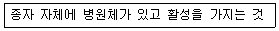
- 1차 감염
- 2차 감염
- 3차 감염
- 4차 감염
(정답률: 74%)
87. 국가보증이나 자체보증을 받은 종자를 생산하려는 자는 농림축산식품부장관 또는 종자관리사로부터 채종 단계별 몇 회 시앗 포장(圃場)검사를 받아야 하는가?
- 5회
- 3회
- 2회
- 1회
(정답률: 79%)
88. 종자관리사 자격과 관련하여 최근 2년간 이중취업을 2회 이상 한 경우 행정처분 기준은?
- 등록취소
- 업무정지 1년
- 업무정지 6개월
- 업무정지 3개월
(정답률: 68%)
89. 종자검사요령상 순도분석에서 사용하는 용어 중 “석과”의 정의에 해당하는 것은?
- 주공부분의 조그마한 돌기
- 외종피가 과피와 합쳐진 벼과 식물의 나출과
- 빽빽히 군집한 화서 또는 근대 속에서는 화서의 일부
- 단단한 내과피와 다육질의 외층을 가진 비열개성의 단립종자를 가진 과실
(정답률: 69%)
90. 식물신품종 보호법상 우선권의 주장에 대한 내용이다. ( )에 알맞은 내용은?
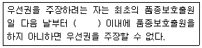
- 1년
- 2년
- 3년
- 4년
(정답률: 76%)
91. 옥수수 교잡종 포장검사 시 포장격리에 대한 내용이다. ( )에 알맞은 내용은? (단, 건물 또는 산림 등의 보호물이 있을 때를 제외한다.)
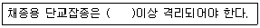
- 500m
- 400m
- 300m
- 200m
(정답률: 27%)
92. 종자관리요강상 유체의 포장검사 시 특정병에 해당하는 것은?
- 백수병
- 균핵병
- 근부병
- 공동병
(정답률: 66%)
93. 종자업 또는 육묘업 등록을 한 날부터 1년 이내에 사업을 시작하지 않거나 정당한 사유없이 1년 이상 계속하여 휴업한 경우 1회 위반시 행정처분기준은?
- 영업정지 7일
- 영업정지 15일
- 영업정지 30일
- 등록취소
(정답률: 63%)
94. 강낭콩 탄저병 조사에 대한 내용이다. ( 가 )에 알맞은 내용은?
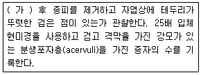
- 3일
- 5일
- 7일
- 9일
(정답률: 57%)
95. 종자관리요령상 고추 제출시료의 “시료의 최소중량”은?
- 50g
- 100g
- 150g
- 200g
(정답률: 70%)
96. 품종목록 등재의 유효기간은 등재한 날이 속한 해의 다음 해부터 몇 년까지로 하는가?
- 3년
- 5년
- 10년
- 15년
(정답률: 81%)
97. 종자검사요령상 수분의 측정에서 저온항온건조기법을 사용하게 되는 종으로만 나열된 것은?
- 당근, 메론
- 피마자, 참깨
- 알팔파, 오이
- 상추, 시금치
(정답률: 60%)
98. 보증종자를 판매하거나 보급하려는 자는 종자의 보증과 관련된 검사서류를 작성일부터 몇 년 동안 보관하여야 하는가? (단, 묘목에 관련된 서류는 제외한다.)
- 1년
- 2년
- 3년
- 4년
(정답률: 65%)
99. 다음 중 ( )에 알맞은 내용은?
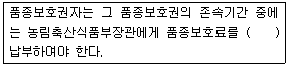
- 5년을 기준으로 1회
- 3년을 기준으로 1회
- 2년을 기준으로 1회
- 매년
(정답률: 80%)
100. 과수와 임목의 경우 품종보호권의 존속기간은 품종보호권이 설정등록 된 날부터 몇 년으로 하는가?
- 15년
- 20년
- 25년
- 30년
(정답률: 72%)